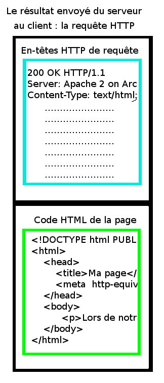

Vous aimeriez créer un site dynamique, par exemple pour mettre en place un compteur de visites, un livre d'or, ou encore un web-RPG (pourquoi pas ?)... Mais vous n'utilisez que le C, et les langages tels que PHP ne vous attirent pas... vous pouvez faire avec vos connaissances et ce tutoriel ! Ce tutoriel présente une introduction à la CGI avec ce langage.
Pour que vos scripts soient exploitables, il faut tout d'abord configurer votre serveur web.
Sous Apache, il faudra créer un fichier .htaccess, que vous placerez à la racine du site (en effet, ce fichier fonctionne récursivement : tous les répertoires situés dans le répertoire contenant votre .htaccess seront concernés par les règles que vous définirez dans celui-ci). Le voici :
Les deux premières lignes indiquent que les fichiers .cgi doivent être exécutés avant d'être envoyés au client. Le comportement par défaut serait d'envoyer le fichier comme s'il s'agissait d'un fichier texte ordinaire. La troisième et dernière ligne dit que votre fichier index.cgi sera exécuté en premier si aucun fichier n'est demandé.
Une dernière chose, le binaire .cgi devra être exécutable (chmod +x) sur votre serveur pour pouvoir être justement exécuté par le serveur web !
Pour commencer, nous allons nous intéresser à un classique Hello World sur une page blanche !
Mais avant de nous y atteler, nous devons en connaître plus sur le fonctionnement du protocole HTTP, en particulier ce que nous nous envoyons au client.

Comme vous pouvez le voir, une réponse du serveur est composée de deux parties :
Les en-têtes qui contiennent des informations sur la réponse ainsi que sur le serveur : une partie est générée par lui-même ;
Le contenu qui est simplement ce que le navigateur affichera.
Mais comment devons-nous séparer les deux éléments ? Une simple ligne blanche.
Ainsi, voici une implémentation de notre Hello World :
#include <stdio.h>
void haut(char *);
void bas();
int main(void)
{
printf("Content-Type: text/html;\n\n");
haut("Ma page en C !");
printf("Hello World !");
bas();
return 0;
}
/* On sépare le squelette HTML du reste du code */
void haut(char *title) {
printf("<!DOCTYPE html PUBLIC \"-//W3C//DTD XHTML 1.0 Strict//EN\" \"http://www.w3.org/TR/xhtml1/DTD/xhtml1-strict.dtd\">\n<html xmlns=\"http://www.w3.org/1999/xhtml\" xml:lang=\"fr\" >\n\t<head>");
printf("\t\t<title>%s</title>", title);
printf("\t\t<meta http-equiv=\"Content-Type\" content=\"text/html; charset=utf-8\" />\n\t</head>\n\t<body>");
}
void bas() {
printf("\t</body>\n</html>");
}
Notez qu'écrire le HTML avec des printf() est relativement sale. Dans un vrai code, on préférera plutôt lire un fichier le contenant.
Pour le compiler, rien de compliqué, il n'y a rien à inclure, comme vous le voyez :
$ gcc main.c -o index.cgi
Placez ce nouveau fichier à la racine du site ; vous pouvez maintenant essayer de vous connecter à votre serveur HTTP à l'endroit qu'il convient (l'emplacement de votre site) : une page avec comme seul contenu le texte « Hello World », c'est magique !
Qui a dit que les sites en C, c'était impossible ? Malheureusement, plein de monde.
Vu que vous savez afficher des données (c'est compliqué, il faut l'avouer :p ), je vous propose un petit TP qui consistera à faire un compteur de visites, qui s'incrémente à chaque ouverture de la page. J'utiliserai des fichiers dans ma correction, il est donc nécessaire de savoir les manipuler.
Pour ce script, nous allons nous baser sur le précédent, en modifiant un peu la fonction main().
On commence par créer une variable pour les visites, une pour le fichier :
int main(void)
{
int visites = 1;
FILE *fichier = NULL;
On ouvre un fichier compteur.txt et on lit la valeur numérique, en la mettant dans visites :
/* ..... */
printf("Content-Type: text/html;\n\n");
haut("Ma page en C !");
printf("J'ai eu %d visiteur(s) ! :)", visites);
bas();
return 0;
}
Pour les commentaires, c'est le seul moyen que j'ai trouvé pour régler un problème d'indentation du site sans modifier le sens du code, ne vous étonnez pas s'ils ne veulent rien dire. ;)
Voici donc ce que donne un bête script de compteur de visites :
int main(void)
{
int visites = 1;
FILE *fichier = NULL;
fichier = fopen("compteur.txt", "r+");
if(fichier != NULL)
{
fscanf(fichier, "%d", &visites);
fseek(fichier, 0, SEEK_SET);
fprintf(fichier, "%d", visites+1);
fclose(fichier);
}
printf("Content-Type: text/html;\n\n");
haut("Ma page en C !");
printf("J'ai eu %d visiteur(s) ! :)", visites);
bas();
return 0;
}
N'oubliez par contre pas de créer votre fichier avec les droits nécessaires pour que l'utilisateur de votre serveur web puisse le modifier.
Un des points inévitables en CGI est le traitement de formulaires. C'est ce que nous allons traiter (sans jeux de mots) dans cette partie.
Méthode GET
La méthode GET, c'est quand les données sont passées dans l'URL. Pour cela, nous allons récupérer une variable environnement qui contient les données avec la fonction getenv() , qui est définie dans l'en-tête stdlib.h. Cette variable environnement est QUERY_STRING, son contenu se présentant sous la forme mavar=mavaleur&unevar=unevaleur&[...].
Imaginons que nous voulions récupérer deux nombres a et b passés dans l'URL et les multiplier, voici comment procéder :
#include <stdio.h>
#include <stdlib.h> // Ne pas oublier pour getenv()
void haut(char *);
void bas();
int main(void)
{
int a=0, b=0;
printf("Content-Type: text/html;\n\n");
haut("Ma page en C !");
char *data = getenv("QUERY_STRING"); // Les variables
if(data == NULL)
{
printf("<p>Erreur dans le script !</p>");
}
else
{
if(sscanf(data, "a=%d&b=%d", &a, &b) != 2) // On récupère les deux chiffres a et b
printf("<p>Vous devez passer des chiffres en données !");
else
printf("<p>%dx%d = %d ! :)</p>", a, b, a*b);
}
bas();
return 0;
}
Là, les valeurs sont passées hors de l'URL. Nous les récupérons dans le flux d'entrée stdin. Au niveau de l'utilisation, on va l'utiliser comme un fichier déjà ouvert en lecture seule, et qu'on a pas besoin de fermer. Ces données sont passées sous la même forme que pour la méthode GET : mon_champs_de_texte=unevaleur&un_textarea=uneautrevaleur.
Si je veux récupérer par exemple un texte entré dans un formulaire, de 80 caractères, dans un champ nommé data et l'afficher (ou en faire ce qu'on veut, même), voici comment il faudrait procéder :
int main(void)
{
char montexte[80] = "";
printf("Content-Type: text/html;\n\n");
haut("Ma page en C !");
if(fscanf(stdin, "data=%80[^&]s", montexte) < 0)
printf("<p>Le formulaire a été mal rempli !</p>");
else
printf("Voici ce que vous avez écrit : %s", montexte);
bas();
return 0;
}
Décoder les données
Si vous avez affiché des chaînes avec des espaces et des caractères dits « spéciaux », vous aurez constaté que pour le commun des mortels, ce n'est pas du tout lisible. Je vous propose donc de décoder cette chaîne avec une fonction. Pour rendre tout ceci pédagogique, ce sera à vous de la coder (une solution sera proposée).
Il y a donc plusieurs règles :
Les espaces sont remplacés par des + ;
Les caractères spéciaux (les +, &, %, les retours à la ligne, etc.) sont remplacés par le signe % suivi de leur code ascii traduit en hexadécimal ;
Le reste demeure identique.
Et une petite piste, pour récupérer le code sous forme décimale, il suffit de la récupérer avec un %x dans la fonction sscanf.
Correction
Voici donc le code que je vous propose, mais ce n'est bien sûr pas le seul qui soit juste.
char *decode(char *str, char *fin)
{
char *dest = strdup(str);
if (dest == NULL)
return NULL;
char *ret = dest;
for (; str < fin && *str != '\0'; str++, dest++)
{
if (*str == '+')
*dest = ' ';
else if (*str == '%')
{
++str;
if (*str == '\0')
break;
int code = '?';
sscanf(str, "%2x", &code);
*dest = code;
str++;
if (*str == '\0')
break;
}
else
*dest = *str;
}
*dest = '\0';
return ret;
}
Dans le code de la partie précédent, voici comment on l'utiliserait :
printf("Voici ce que vous avez écrit : %s", unencode(montexte, montexte+80));
On exécute notre petite fonction pour afficher le haut ;
On récupère l'entrée standard à maximum 136 caractères (les limites des deux variables, leurs noms, et l'esperluette) ;
On décode la ligne et on récupère les valeurs ;
On vérifie si l'utilisation a rentré quelque chose ;
Si oui, on ouvre le fichier et on ajoute les valeurs sur deux lignes.
Maintenant, pour l'affichage des autres messages, juste avant d'afficher le bas :
fichier = fopen("messages.txt", "r");
if(fichier == NULL) {
printf("Erreur à la récupération des messages.");
}
else {
while(fgets(auteur, TAILLE_AUTEUR, fichier) != NULL) {
if(fgets(texte, TAILLE_TEXTE, fichier) != NULL)
{
printf("<p>%s a écrit :<br><p style=\"margin-left: 30px; margin-top: -10px;\">« %s »</p></p>", auteur, texte);
}
}
fclose(fichier);
}
Par contre, attention, ceci étant un code d'apprentissage, je n'ai pas préféré le mettre, mais ce code contient une faille de sécurité, il ne faut donc pas l'utiliser sur un vrai site : on ne traite pas vraiment ce que l'utilisateur a rentré, donc si c'est du HTML ou du Javascript, c'est potentiellement dangereux. Sur un vrai site, il faudrait écrire une fonction qui remplace les chevrons d'une chaîne par leur équivalent en HTML : ainsi < devient < et > devient >
Ce tutoriel traite surtout de l'aspect théorique de CGI ; on aurait pu utiliser n'importe quel langage : aussi bien le Python, que le C++ ou encore le Bash. Sachez aussi qu'une bibliothèque facilitant l'utilisation de la CGI en C existe : Documentation de CGIC. Si vous voulez utiliser des bases de données, c'est tout à fait possible, l'exemple même avec un des tutoriels de ce site : Utiliser l'API MySQL dans vos programmes.
Ce tutoriel a été inspiré du tutoriel « Aperçu de la CGI avec Python » de Krankkatze que je remercie d'ailleurs pour ses conseils. Je tiens aussi à remercier coyotte508, gnomnain, Yno, shareman et le canal IRC ##hippie sur Freenode pour leur aide plus ou moins grande dans les codes de ce tutoriel.